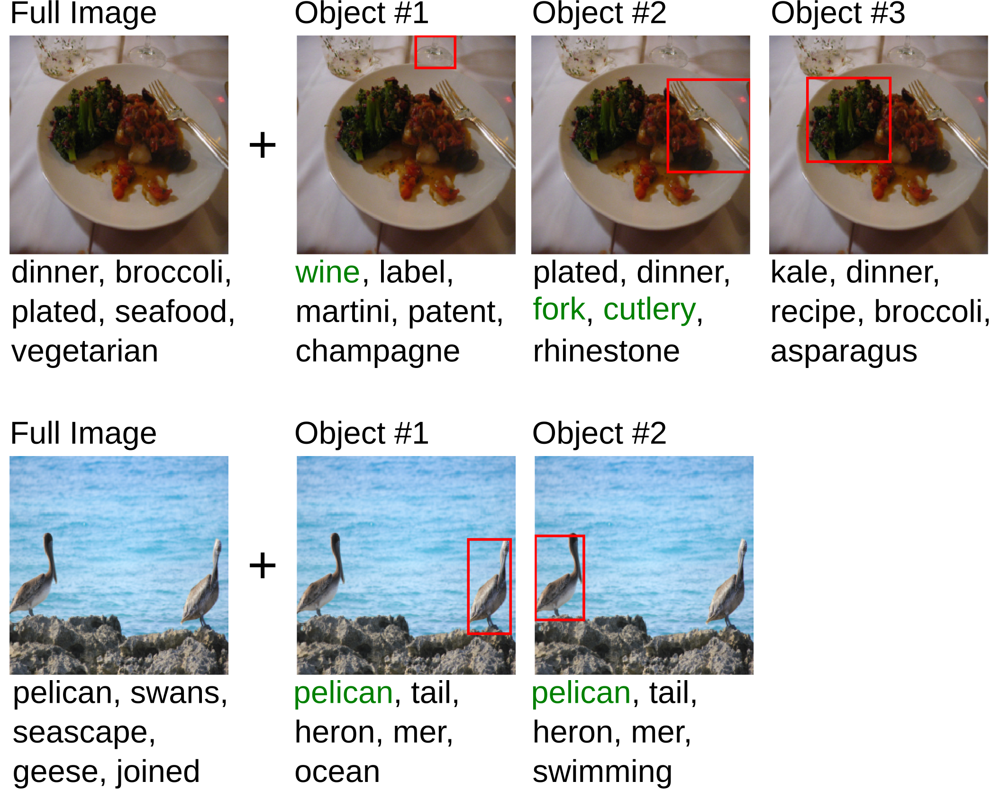

Developing high-performing, yet interpretable models remains a critical challenge in modern AI. Concept-based models (CBMs) attempt to address this by extracting human-understandable concepts from a global encoding (e.g., image encoding) and then applying a linear classifier on the resulting concept activations, enabling transparent decision-making. However, their reliance on holistic image encodings limits their expressiveness in object-centric real-world settings and thus hinders their ability to solve complex vision tasks beyond single-label classification. To tackle these challenges, we introduce Object-Centric Concept Bottlenecks (OCB), a framework that combines the strengths of CBMs and pre-trained object-centric foundation models, boosting performance and interpretability. We evaluate OCB on complex image datasets and conduct a comprehensive ablation study to analyze key components of the framework, such as strategies for aggregating object-concept encodings. The results show that OCB outperforms traditional CBMs and allows one to make interpretable decisions for complex visual tasks.
The proposed Object-Centric Concept Bottleneck (OCB) framework enables interpretable, object-aware reasoning for complex visual tasks via the following steps:
(I) An object proposal module identifies and refines object candidates within an image.
(II) A concept discovery module encodes the entire image and its object crops into human-understandable concept activations.
(III) These activations are aggregated and passed to a simple, interpretable predictor to generate the final output.
Object-centric concept representations allow for a more fine-grained and modular concept space. They include previously undiscovered concepts or provide detailed information about object counts. It is even possible to trace concept activations and concept relevance back to the objects from which they come.
We introduce COCOLogic, a benchmark derived from the MSCOCO dataset that evaluates a model’s ability to perform structured visual reasoning in a single-label classification setting. Unlike standard object recognition tasks, COCOLogic requires classification based on logical combinations of object categories, including conjunctions, disjunctions, negations, and counting constraints. Each image is assigned to exactly one of ten mutually exclusive classes, ensuring unambiguous labeling. These classes are defined by semantically meaningful logical rules (e.g., “occupied interior” requires a chair or couch and at least one person, while “empty seat” requires the same furniture but no person). Images that do not satisfy exactly one rule are excluded. Scripts to generate COCOLogic from the MSCOCO dataset can be found in our GitHub repository.
@article{steinmann2025object,
title={Object Centric Concept Bottlenecks},
author={Steinmann, David and Stammer, Wolfgang and W{\"u}st, Antonia and Kersting, Kristian},
journal={Advances in Neural Information Processing Systems (NeurIPS)},
year={2025}
}